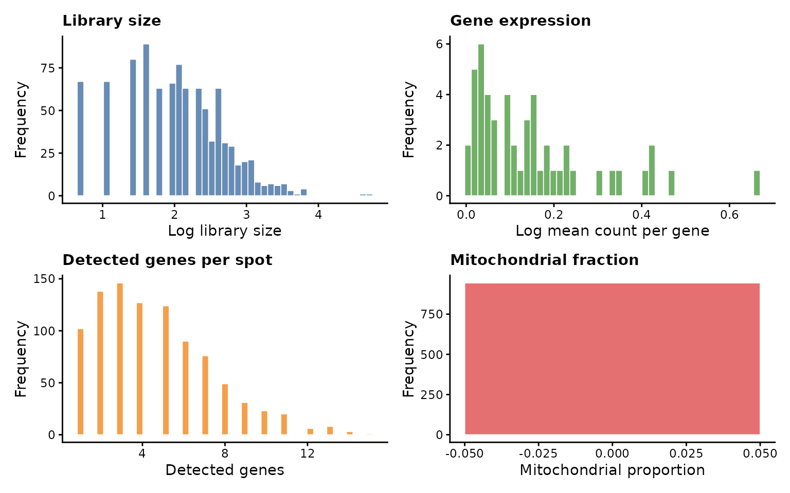
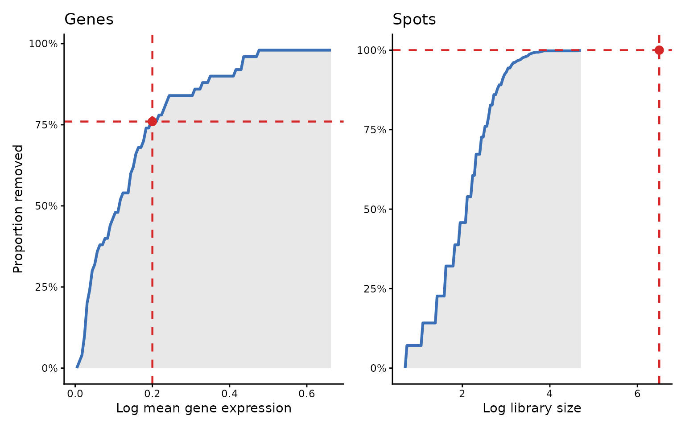
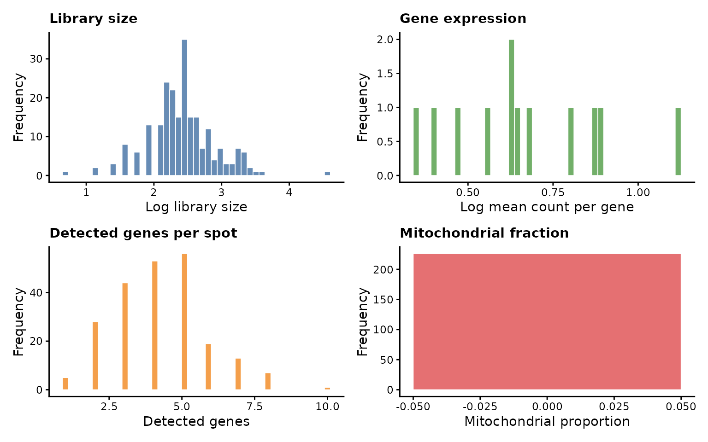
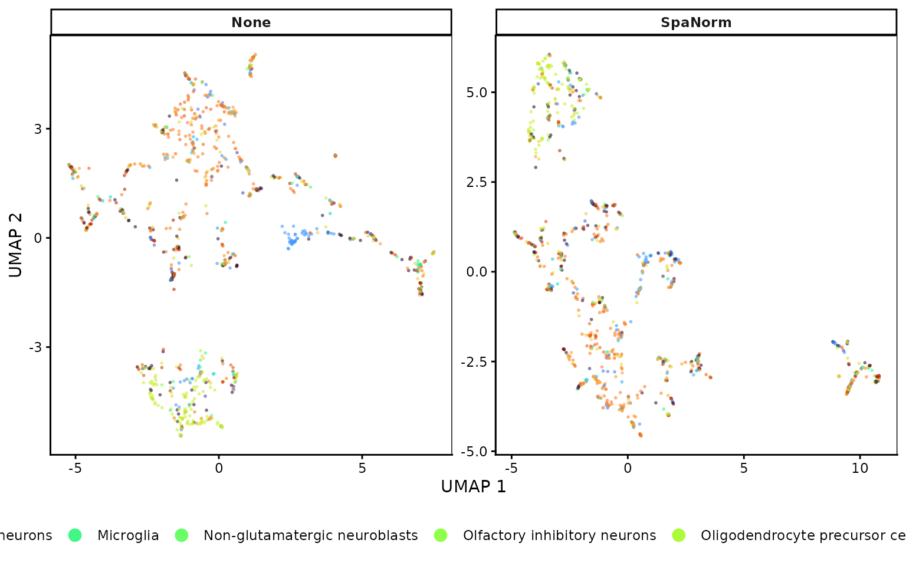

Introduction
STBench is an R package for comparing normalisation methods in spatial transcriptomics.
Quality control
Calculate and visualise QC metrics
We first calculate spot-level metrics, including library size, detected genes and mitochondrial fraction, together with gene-level expression summaries. We inspect their distributions before filtering.
spe <- add_qcs(
spe_example,
assay_name = "counts",
mito_pattern = "^mt-|^MT-"
)
p_qc <- plot_qc(
spe,
bins = 45,
show_density = TRUE,
theme_name = "classic"
)
p_qc$plot
Explore filtering thresholds
We examine the relationship between possible cutoffs and the proportions of spots and genes removed, without performing any filtering. We use illustrative rather than dataset-specific thresholds.
p_cutoffs <- plot_qc_cutoffs(
spe,
library_cutoff = 6.5,
gene_cutoff = 0.2,
n_points = 100,
theme_name = "classic"
)
p_cutoffs$plot
Apply filtering and reassess QC
We remove spots and genes below the selected thresholds. Choose cutoffs appropriate to the dataset.
spe_filtered <- filter_qc(
spe,
library_cutoff = 2.5,
gene_cutoff = 0.2,
recalculate = TRUE,
assay_name = "counts",
mito_pattern = "^mt-|^MT-"
)
plot_qc(spe_filtered, theme_name = "classic")$plot
Apply normalisation methods
The None method provides a log1p-transformed baseline.
Method-specific arguments are supplied through params. We
execute normalisation on the small dataset; for subsequent comparisons,
we use the saved norm_example for a consistent
reference.
norm_recomputed <- normalize_spe(
spe_example,
methods = c("None", "SpaNorm"),
params = list(
spanorm = list(
sample_p = 0.15,
df_tps = 6,
adj_method = "logpac",
seed = 123
)
)
)
norm <- norm_example
lapply(norm, dim)
#> $None
#> [1] 50 944
#>
#> $SpaNorm
#> [1] 50 944Compare normalised library sizes
We compare summed normalised expression across spots. The comparison uses the normalisation methods in the example dataset.
p_ls <- plot_library_size_comparison(
norm,
methods = names(norm),
assay_name = "logcounts",
point_size = 0.5,
theme_name = "classic"
)
p_ls$plot
UMAP visualisation
We run PCA and UMAP independently for each normalisation method and colour by the available cell-type annotation.
umap_data <- get_umap_data(
norm,
methods = names(norm),
prop_spots = 1,
seed = 123,
assay_name = "logcounts",
n_pcs = 10,
n_neighbors = 15
)
p_umap <- plot_umap_comparison(
umap_data,
colour_by = "cell_type",
point_size = 1,
alpha = 0.6,
ncol = 2,
theme_name = "classic"
)
p_umap$plot
Session information
sessionInfo()
#> R version 4.5.0 (2025-04-11)
#> Platform: x86_64-pc-linux-gnu
#> Running under: Red Hat Enterprise Linux 9.8 (Plow)
#>
#> Matrix products: default
#> BLAS/LAPACK: FlexiBLAS OPENBLAS; LAPACK version 3.10.1
#>
#> locale:
#> [1] LC_CTYPE=en_AU.UTF-8 LC_NUMERIC=C
#> [3] LC_TIME=en_AU.UTF-8 LC_COLLATE=en_AU.UTF-8
#> [5] LC_MONETARY=en_AU.UTF-8 LC_MESSAGES=en_AU.UTF-8
#> [7] LC_PAPER=en_AU.UTF-8 LC_NAME=C
#> [9] LC_ADDRESS=C LC_TELEPHONE=C
#> [11] LC_MEASUREMENT=en_AU.UTF-8 LC_IDENTIFICATION=C
#>
#> time zone: Australia/Melbourne
#> tzcode source: system (glibc)
#>
#> attached base packages:
#> [1] stats graphics grDevices utils datasets methods base
#>
#> other attached packages:
#> [1] STBench_0.1.0
#>
#> loaded via a namespace (and not attached):
#> [1] gridExtra_2.3 rlang_1.1.7
#> [3] magrittr_2.0.4 scater_1.37.0
#> [5] otel_0.2.0 matrixStats_1.5.0
#> [7] compiler_4.5.0 systemfonts_1.3.1
#> [9] vctrs_0.7.2 pkgconfig_2.0.3
#> [11] SpatialExperiment_1.20.0 crayon_1.5.3
#> [13] fastmap_1.2.0 magick_2.9.1
#> [15] XVector_0.49.0 scuttle_1.19.0
#> [17] labeling_0.4.3 rmarkdown_2.31
#> [19] ggbeeswarm_0.7.3 ragg_1.4.0
#> [21] xfun_0.57 bluster_1.19.0
#> [23] cachem_1.1.0 beachmat_2.25.1
#> [25] jsonlite_2.0.0 DelayedArray_0.35.2
#> [27] BiocParallel_1.43.4 irlba_2.3.7
#> [29] parallel_4.5.0 cluster_2.1.8.2
#> [31] R6_2.6.1 bslib_0.10.0
#> [33] RColorBrewer_1.1-3 limma_3.65.1
#> [35] GenomicRanges_1.61.1 jquerylib_0.1.4
#> [37] Rcpp_1.1.1 Seqinfo_0.99.2
#> [39] SummarizedExperiment_1.39.1 knitr_1.51
#> [41] IRanges_2.43.0 FNN_1.1.4.1
#> [43] Matrix_1.7-4 splines_4.5.0
#> [45] igraph_2.2.2 tidyselect_1.2.1
#> [47] rstudioapi_0.17.1 dichromat_2.0-0.1
#> [49] abind_1.4-8 yaml_2.3.12
#> [51] viridis_0.6.5 codetools_0.2-20
#> [53] lattice_0.22-9 tibble_3.3.1
#> [55] Biobase_2.69.0 withr_3.0.3
#> [57] S7_0.2.1 evaluate_1.0.5
#> [59] desc_1.4.3 SpaNorm_1.3.4
#> [61] pillar_1.11.1 MatrixGenerics_1.22.0
#> [63] stats4_4.5.0 generics_0.1.4
#> [65] S4Vectors_0.47.0 ggplot2_4.0.2
#> [67] sparseMatrixStats_1.21.0 scales_1.4.0
#> [69] glue_1.8.1 metapod_1.17.0
#> [71] tools_4.5.0 BiocNeighbors_2.3.1
#> [73] ScaledMatrix_1.17.0 RSpectra_0.16-2
#> [75] locfit_1.5-9.12 fs_1.6.6
#> [77] scran_1.37.0 grid_4.5.0
#> [79] edgeR_4.7.3 SingleCellExperiment_1.32.0
#> [81] patchwork_1.3.2 beeswarm_0.4.0
#> [83] BiocSingular_1.25.0 vipor_0.4.7
#> [85] cli_3.6.5 rsvd_1.0.5
#> [87] textshaping_1.0.1 S4Arrays_1.9.1
#> [89] viridisLite_0.4.3 dplyr_1.2.0
#> [91] uwot_0.2.4 gtable_0.3.6
#> [93] sass_0.4.10 digest_0.6.39
#> [95] BiocGenerics_0.56.0 SparseArray_1.9.0
#> [97] ggrepel_0.9.6 dqrng_0.4.1
#> [99] rjson_0.2.23 htmlwidgets_1.6.4
#> [101] farver_2.1.2 htmltools_0.5.9
#> [103] pkgdown_2.2.1 lifecycle_1.0.5
#> [105] statmod_1.5.1